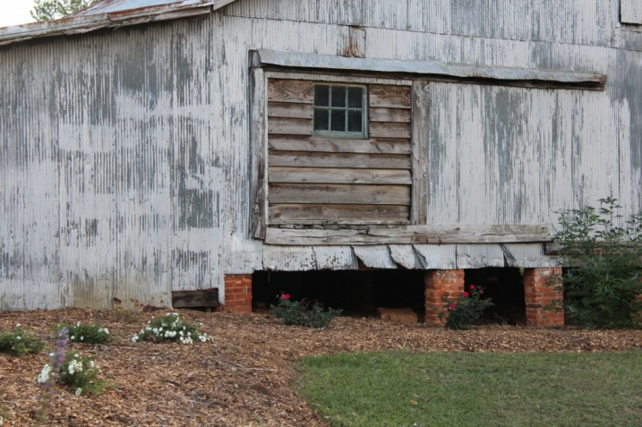
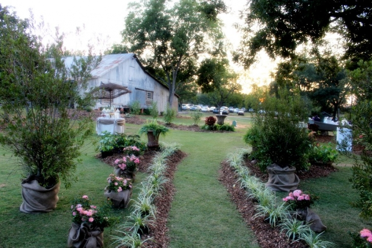
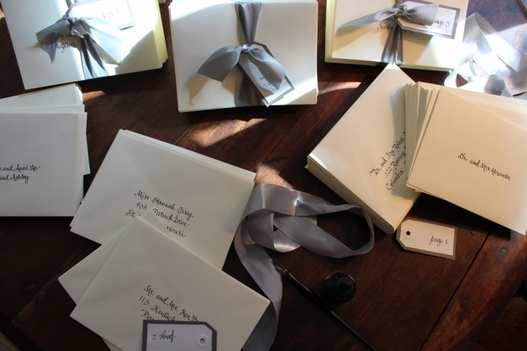

.png)
.PNG)
.PNG)
.PNG)
.PNG)
.PNG)
.JPG)
.JPG)
.PNG)
.PNG)



I believe we have had our fill of school themed everything in the last two weeks here, so how about we go in a different direction today. Labor Day weekend marks the end of summer and the move to fall. (I am ready for some fall weather, please!) To celebrate this change of seasons (not officially by the calendar, of course) and to continue with our wedding week, I’d like us to look at a different kind of wedding today – one whose setting was early fall in a very rustic barn.

This time last year, things were in full swing for my niece’s wedding…parties, showers, construction, and landscaping. Yes, you read that right – construction and landscaping. This was a major do-it-yourself-er kind of wedding. Let’s start with the invitations since that was my little part in the big event.

I normally offer all of our nieces and nephews my hand lettering services for addressing their wedding envelopes. Well, my niece decided that she wanted her envelopes and her invitations hand lettered. So she brought me a sample with a font she liked, and I worked and reworked her invitation a dozen or so times until I got it like I wanted. Then I sent it to her for approval, and she had it letterpressed from my handwritten work. Here is how it turned out. (Now keep in mind, it was to look handcrafted – not calligraphy perfect.)

And here are the 450+ hand lettered inner and outer envelopes stuffed and ready for stamps .

The rehearsal dinner and the wedding were held at the Green Bell Barn. Even in the middle of September you can expect hot evenings in middle Georgia, but the night of the rehearsal dinner was unseasonably cool. Tables were set up in the barn for a delicious bar-b-que.

Here is a closer look at the table setting for you.
Remember I told you construction was going on for this wedding? This mantle was one of the many things built by the bride’s father to use in the barn.

Now I just have to throw this in here. September was a really busy month with all the things associated with the wedding and our daughter was drum major for the local high school band. The wedding rehearsal dinner was on a Friday night, and I know you know what a Friday night in September means…

high school football!
We enjoyed our dinner at the barn, and then rushed like crazy to get to the high school for an after-the-game-sneak-peek of the band’s show for competition under our daughter’s direction.
Okay back to our regularly scheduled wedding….. 🙂
Saturday morning was cool and cloudy, but by late afternoon it had turned sunny with a beautiful blue sky. The photo at the very top of today’s post shows you the barn that was on your right as you approached the site, and the second photo shows you the path leading up to the ceremony. All of those roses and other plants were put in by the bride’s father and his untiring crew of workers. Also on the right was a table set up with drinks for before the ceremony. (The jars are empty since I took these photos after the ceremony.)

On the left was a table with a guest book and programs.

This was the view to the ceremony site for the wedding. Those doors were one of the big construction projects. That’s my sweet husband there in the doorway. He got up early that Saturday morning to drive to the barn and help hang those doors on the custom made frame.

He stayed all day to help because there were so many last minute things to finish up. Here is another of the construction projects made for the wedding. 
This crazy photo shows my husband up on the roof before the ceremony setting up his camcorder to tape the wedding.

And then it was time for the ceremony. Here were the precious flower girls.

We’re going to skip all the bridesmaids and go straight to the bride being escorted by her father, if that is okay with you all. Isn’t that dress absolutely beautiful?

This was after the ceremony with all the wedding party standing around waiting on the photographer. You can see the barn better in this shot (and the bridesmaids’ dresses since I didn’t show them to you above.)

While they were all waiting on the photographer, I ran inside the barn to take photos of everything ready for the reception. (Now aren’t you glad I am so sneaky with my photography! 🙂 )

I loved the stacked oreos with the cartons of milk in the old Coca Cola cooler.

Here are some of the wonderful food displays.


I know you want to see a close up of the desserts.

Unfortunately, I only got a bite or two of all this fabulous food because I was too busy running around doing things like….

helping my niece bustle that dress so that she could walk in it,

taking photos of sweet babies,

photos of finished construction projects,

and photos of family pictures creatively displayed on shutters.
I did manage to get a slice of the wedding cake after taking this shot.

And I enjoyed some of the going away treats here.

And then it was time to call it a day and go home.

It was a gorgeous and unique wedding with tons of work and help from a lot of family members and friends. These have obviously been my amateur photos from one of my first attempts at using my camera. If you would like to see the professional photographer’s photographs (which are amazing!), you can click here. And I’ve got another wedding question for you today….
What time of day was your wedding (or if you are single, what time would you like to have a wedding?) Ours was at 10:00 in the morning, & we served brunch for our reception since the wedding was so early!

I hope you have enjoyed all the weddings here the last few days.
I’ll be back to “normal” with pretty houses for you next week. 🙂


.PNG)
Hi Kelly, your niece’s wedding was beautiful!!! Your family is lovely. And you have so many talents! Great calligraphy and photos. Thanks for sharing. Have a wonderful week, Robin
———————————————————————–
Robin, thank you for ALL your sweet comments here today! I appreciate your visiting here AND your jumping in to leave a comment.
I hope you have a great week too (It’s a short one!)
Kelly
Kelly,
There are not enough words to tell you how thankful we are for all the compliments and kind words about Ashley and Phillip’s wedding. You played one of the main roles in getting this wedding ceremony on the right track with your willingness to help Ashley with her invitations and addressing all the envelopes. We enjoyed every minute preparing for her wedding. You know that I do not have the vision that Ashley and Steve have. But with their creatively, everyone’s help, and all my running around and baking, the wedding was “perfect!” We appreciate you!
Janna
———————————————————————–
Janna – You do not have to thank me. It was my pleasure – remember I LOVE weddings! And this one was beautiful AND fun.
Kelly
Kelly,
I love the look of your neice’s wedding, it’s refreshing to see what beautiful details can be accomplished when all loved ones chip in. Your calligraphy is wonderful. So pretty.
Karen
————————————————————————-
Karen – Thank you for all the compliments! A lot can be accomplished when you have a big group working together (and this was a VERY big group.)
Kelly
Oh her dress!!! Perfection!
And your calligraphy…girrrl!!! Perfection, too!!
Letterpress? I don’t know how that works but it is
good to know.
I did go see all their pics and love it all!
———————————————————————-
Phyllis – That dress WAS gorgeous (but I would have never been able to keep something like that “up”. ha ha) Thank you for the compliment on my writing. Letterpress is the way to go to me. I love it. Glad you looked at the real photographer’s site. I hope it gave you inspiration for your October gig. 🙂
Kelly
This wedding just took my breath away. Just beautiful. I loved the family pictures displayed on the shutters.
——————————————————————–
Minnie – So glad you enjoyed the wedding post. It was a beautiful and fun wedding, and it was also fun to see all the different wedding “styles” through the years in those family wedding photos. Goodness knows, I sure wouldn’t be wearing a HAT if I had to do it today!
Kelly
Kelly-I absolutely LOVE everything about this wedding. The construction projects are beautiful, and the oreos and milk are genius! What a lovely family you have!
————————————————————————
Susan – I’m so glad you enjoyed the post! I thought the construction projects were great too. Her father now rents them out for other weddings, so they are being “recycled.” 🙂 As always, thank you for leaving your kind comments here.
Kelly
Oh! I almost forgot. We got married at 2pm on a Sunday. I’m super thrifty, and my parents offered me a lump sum. A 2pm wedding afforded me to marry at the venue of my choosing with catered cake/grooms cake and punch without having to serve a meal or use the formal ball room. I actually bet my dad money that I’d have him out in enough time to listen to the Cowboy game on the way home. I won! He had no idea how quickly we wanted out of there ; ) Newlyweds. What’re you gonna do?
———————————————————————
Julianna – I love it! Betting your dad – that’s hilarious! A 2 pm wedding must be the way to go for saving money. We wanted ours to be pretty short too…a wedding in August in Georgia with groomsmen in tux’s is HOT. That’s another reason we opted for a wedding at 10 in the morning. Thanks for sharing your wedding story!
And that oreo cake was so cute that I copied it for our daughter’s graduation party. It would work just as well for your husband’s birthday too! (How can you go wrong with oreo’s?!) The goodie bags did have cookies in them, and I quickly devoured them. 🙂 I love rustic too. I think it just makes everyone feel at home.
Thank you for all your compliments!
Kelly
WOW! I have some many compliments to give! That was a beautiful wedding and quite a photogenic gene pool you have there. I LOVE the idea of the orea cake and cartons of milk. I may do some version of that when my one year old turns two… or my husband turns 40 ; ) The goody bags were cute. It looked like cookies? The landscaping and potted plants made for a beautiful sight. I just think rustic is beautiful and they did a wonderful job executing it all.
This is one of the most beautiful barn weddings I have ever seen! What a lucky bride to have a family that pitched in to make their day so very special! The food displays were amazing, but my favorite things are the mantle area and the “window” panels. I haven’t looked at the professional pics yet, but I think you did an awesome job capturing the event.
———————————————————————–
Kathy – Thank you for your sweet words! I loved that mantle area too. The one thing I didn’t get a picture of was the children’s area with a little table and some chairs over to the side of the mantle. Wish I could have shown you all that because it was very sweet. I hope you have a chance to see the professional shots. They are a million times better!(but I do appreciate your compliment!)
Kelly
Barbara – I love the simplicity of the afternoon cake, punch, nuts, mints, etc. reception. I can remember going to those kinds of receptions many years ago in our Baptist church. I always told my mother that those were my favorite kinds of “meals.” Three married in barns is amazing!! You ought to be an expert on “barn weddings” by now!
Kelly
Our wedding was at 2 p.m. and those were the days of cake, punch, nuts, mints, coffee & tea for a reception (getting pretty near 40 years ago!). I love weddings in a country setting. My sisters and I have 6 kids between us, 3 are married and all 3 weddings took place in barns. Gorgeous farms that have become event venues. I hope the other 3 also get married somewhere similar.